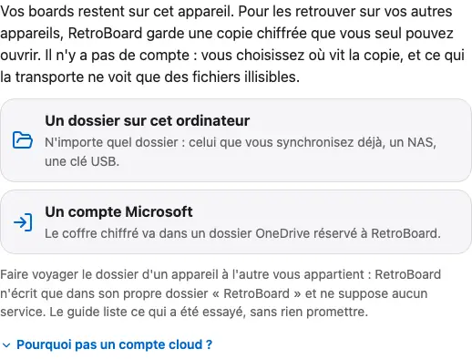
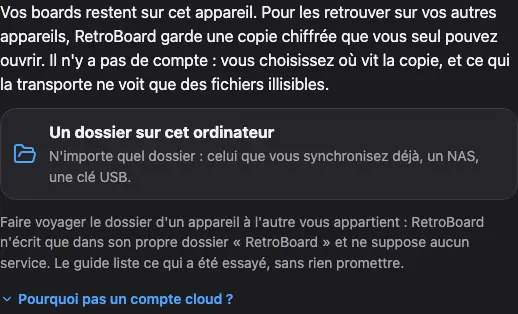
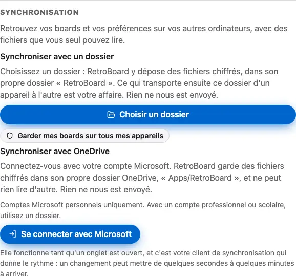
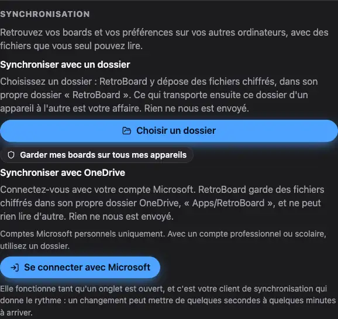
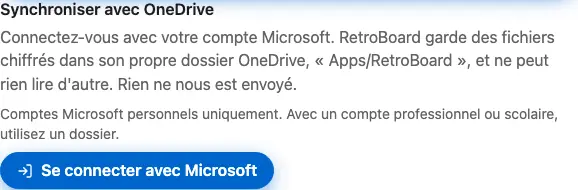
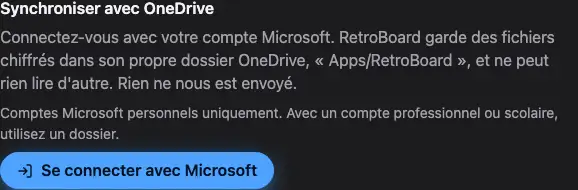

Garder ses boards partout
Garde tes boards et tes préférences sur tous tes appareils, dans une copie chiffrée que seul toi peux lire, sans compte.
La synchronisation garde tes boards et tes préférences sur tous tes appareils, sans compte chez nous et sans serveur de notre côté : RetroBoard enregistre une copie chiffrée que seul toi peux ouvrir, et tu choisis où elle vit. Le bouclier au début de la barre d'outils en est le bouton. Appuie dessus : RetroBoard synchronise maintenant et t'indique l'heure ; la première fois, il ouvre une courte fiche qui dit ce qu'est la synchronisation et ne propose que les moyens que ton appareil sait vraiment faire. Il y a deux façons aujourd'hui. Avec un dossier, tu choisis n'importe quel dossier : RetroBoard y écrit des fichiers chiffrés dans un dossier RetroBoard, et ce qui transporte ensuite ce dossier d'un appareil à l'autre est ton affaire. Ce ne sont que des fichiers. Avec OneDrive, là où ce site le propose, tu appuies sur « Se connecter avec Microsoft » et RetroBoard garde les mêmes fichiers chiffrés dans son propre dossier OneDrive, Apps/RetroBoard : aucun client de synchronisation n'est nécessaire, donc cela fonctionne aussi sur téléphone et dans les navigateurs sans sélecteur de dossier.
Ton mot de passe et ta clé de récupération. La première fois, tu choisis un mot de passe de 12 caractères ou plus. RetroBoard chiffre tout avec une clé que seuls le mot de passe (ou la clé de récupération affichée juste après) peuvent ouvrir. Imprime la clé de récupération, enregistre-la en fichier ou copie-la, et garde-la loin de cet ordinateur. Si tu perds à la fois ton mot de passe et ta clé de récupération, personne, nous compris, ne peut lire ce qui est stocké : il est impossible de le récupérer. La synchronisation ne démarre qu'après avoir coché les deux cases qui confirment que tu as rangé la clé et compris cela. Il n'y a aucun moyen de synchroniser sans mot de passe ni de désactiver le chiffrement.
Changer d'ordinateur. Sur le nouvel ordinateur, attends que ton client de synchronisation apporte le dossier (avec OneDrive, connecte-toi simplement avec le même compte Microsoft), ouvre Préférences > Synchronisation, choisis le même dossier et saisis le mot de passe (ou utilise la clé de récupération). Ta bibliothèque apparaît en un instant. Le contenu d'un board est lu quand tu l'ouvres, si bien qu'un long historique ne ralentit jamais la première synchronisation. Les préférences et la bibliothèque sont fusionnées : le changement le plus récent de chaque réglage l'emporte.
Ce qui est synchronisé. Tes boards (conservés hors ligne quand tu les as créés, ou ceux que tu enregistres dans ta bibliothèque), la bibliothèque, tes préférences, ton nom affiché et tes équipes. Les réglages d'appareil (densité, conservation, notifications, webhook Slack) et tous les secrets restent sur l'appareil.
Ce qui transporte le dossier, c'est ton affaire. RetroBoard ne suppose aucun service et n'en nomme aucun dans l'application. Des dossiers transportés par OneDrive, Dropbox, Google Drive, iCloud Drive, Syncthing et Nextcloud ont été essayés, et un NAS ou une clé USB ne sont aussi que des fichiers ; « essayé » n'est pas une promesse, car ces clients évoluent et se comportent différemment d'un ordinateur à l'autre.
Un dossier que ton navigateur refuse. Chrome et ses cousins refusent certains dossiers (Documents, Bureau, Téléchargements, la racine d'un disque). RetroBoard le dit alors et propose de créer d'abord un sous-dossier nommé « RetroBoard Sync » et de choisir celui-là.
Déplacer le coffre. « Choisir un autre dossier », dans les réglages de synchronisation, pointe le coffre ailleurs. Si le nouveau dossier contient le même coffre (tu l'as déplacé avec tes propres outils), la synchronisation continue simplement à partir de là et rien n'est dupliqué. S'il est vide, on te demande si tu veux y copier le coffre. S'il contient un autre coffre, tu choisis « Utiliser ce coffre » ou « En créer un nouveau ici » : deux coffres ne sont jamais fusionnés sans ton accord.
Ce que le cloud du dossier, ou OneDrive, peut voir. Seulement des fichiers chiffrés aux noms aléatoires : à peu près combien de boards tu as, la taille des fichiers (arrondie à une puissance de deux), le moment des changements et le nombre d'appareils, plus le chemin du dossier ou le compte qu'il connaissait déjà. Aucun titre, note, nom ou réglage n'est lisible.
Limites. La synchronisation par dossier fonctionne dans Chrome, Edge, Opera et Brave sur ordinateur, et seulement tant qu'un onglet est ouvert : la mise à jour se fait à l'ouverture de l'application, au retour sur l'onglet, au retour du réseau, chaque minute (toutes les 30 secondes sur un board) et avec « Synchroniser maintenant ». Ton client de synchronisation donne le rythme, donc un changement peut mettre de quelques secondes à quelques minutes à arriver. Chrome redemande parfois l'autorisation du dossier : l'état indique « Autoriser l'accès au dossier » et tes modifications attendent sur l'appareil que tu cliques. Safari, Firefox et les téléphones peuvent utiliser OneDrive là où il est proposé, et gardent sinon leurs boards sur l'appareil comme avant.
OneDrive. Seuls les comptes Microsoft personnels (Outlook.com, Hotmail, Live) peuvent se connecter : avec un compte professionnel ou scolaire, utilise le dossier et ton client de synchronisation OneDrive. RetroBoard ne demande à Microsoft l'accès qu'à son propre dossier et ne peut rien lire d'autre dans ton OneDrive. Microsoft demande à un site de se reconnecter environ une fois par jour : l'état indique alors « Reconnexion nécessaire », un clic, puis tu saisis de nouveau le mot de passe du coffre. La connexion est un aller-retour pleine page chez Microsoft : fais-la entre deux rétrospectives plutôt que pendant l'une d'elles.
Déconnecter et oublier. Arrête la synchronisation et retire de ce navigateur le dossier ou la connexion, les clés et les préférences synchronisées. Tes boards restent. Tu peux aussi supprimer les fichiers du coffre dans le dossier ou dans OneDrive : cela demande ton mot de passe et ne supprime que les fichiers de RetroBoard. Microsoft ne permet pas à une application de mettre fin à son propre accès : RetroBoard reste listé dans ton compte Microsoft tant que tu ne l'y retires pas, sur account.microsoft.com/privacy/app-access (la boîte de dialogue y mène).
1 Le bouclier au début de la barre d'outils est le bouton de synchronisation : il synchronise d'un appui, et la première fois il ouvre cette fiche qui explique tout en trois phrases.
Le bouclier au début de la barre d'outils, à côté du badge de chiffrement du board, est toujours là. Sa forme dit l'état (non configuré, verrouillé, synchronisé, en cours, hors ligne ou demandant ton attention) et son nom le dit en toutes lettres. Quand tu appuies dessus, il synchronise maintenant si la synchronisation est connectée, ouvre la demande du mot de passe si elle est verrouillée, fait l'unique geste qui répare un problème (autoriser le dossier, le choisir de nouveau, se reconnecter) ou, si la synchronisation n'est pas configurée, ouvre la fiche « Garder mes boards sur tous mes appareils ». Un clic droit, ou un appui long sur un écran tactile, ouvre un petit menu vers les réglages. Après le premier board que tu crées, une ligne discrète te propose une fois cette fiche ; « Pas maintenant » est retenu sur cet appareil.


2 Dans le profil, la section Synchronisation te laisse choisir n'importe quel dossier : ce qui le transporte d'un appareil à l'autre est ton affaire.
Sur la fiche, « Un dossier sur cet ordinateur » (ou « Choisir un dossier » dans la section Synchronisation, en bas de ton profil) ouvre le sélecteur de dossier de ton navigateur. Si le dossier contient déjà un coffre, RetroBoard demande son mot de passe et ne l'écrase jamais ; sinon tu en crées un. Le bouclier affiche ensuite un état (Synchronisé, Synchronisation en cours, Hors ligne, Verrouillé, Autoriser l'accès au dossier, Dossier introuvable, En attente d'un fichier de votre client de synchronisation, Demande votre attention) avec « Synchroniser maintenant » et la liste de tes appareils dans la boîte de dialogue.


3 Là où le site le propose, « Se connecter avec Microsoft » garde le coffre chiffré dans le dossier OneDrive de RetroBoard, sans client de synchronisation.
Là où le site le propose, la section Synchronisation montre aussi « Synchroniser avec OneDrive ». « Se connecter avec Microsoft » t'emmène chez Microsoft puis te ramène sur la page où tu étais, section Synchronisation ouverte : si ton OneDrive ne contient pas encore de coffre tu en crées un (mot de passe, clé de récupération), sinon tu saisis son mot de passe. L'état de la barre d'outils est le même que pour un dossier, avec « Reconnexion nécessaire » quand Microsoft te le demande.

